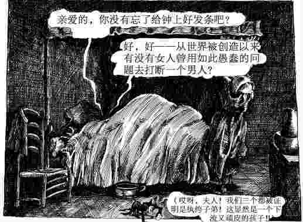
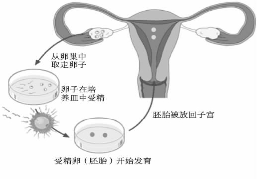
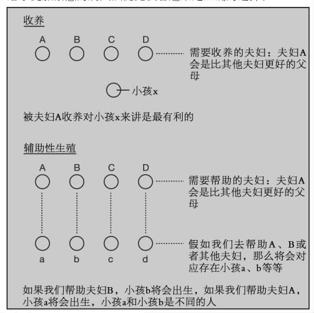
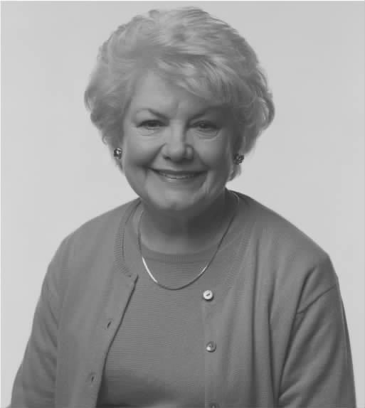

医学伦理学的故事在其概念产生前就已经有了。崔斯特瑞姆·项迪认为，一个人的性格和他将来所享受的生活由他父母交媾时的想法所决定。崔斯特瑞姆抱怨道：

图9 当医生帮助一个女人怀孕时，他们必须留意他们将要做的事情。
1990年《人工授精和胚胎学法》（HFEA）——英国的一部管理辅助性生殖服务的法律——要求医生在帮助一个女人怀孕时必须留意他们将要做的事情。法案声明：“一个女人只有在充分考虑通过人工授精出生的小孩的福利（包括小孩需要一个父亲的要求）之后，才会被给予人工授精方面的服务……”
当一个59岁的绝经后妇女将要在意大利接受一个私密的受精手术以便怀上一个小孩时（事实上她后来通过这个办法生下了一对双胞胎），英国媒体一片哗然。“考虑一下那个将要出生的可怜的孩子吧”是对于“当他们和朋友在校门口相遇时，由于他们的母亲如此年老，他们将会成为朋友的笑柄”的一个反应。监督受精手术全过程的人工授精和胚胎管理局的一个成员称，如果老龄妇女无法保证可能出生的小孩的福利，她将没有资格接受人工授精。
在我们的道德考虑内，小孩的福利是一个非常重要的因素，《人工授精和胚胎学法》的措辞也许看起来毫无争议，但其实并不是这样。在实施人工受精时，考虑的并非是一个实际存在的小孩的福利，而是将来也许会存在的小孩的福利（如果将来确实会有这么个孩子的话）。很显然，对那个将来也许会存在的小孩的福利作出考虑实际上是非常棘手的。
在体外受精（IVF，一项导致试管婴儿观念产生的技术）时代的早期，一个曼彻斯特女人被发现有一个涉及卖淫罪的犯罪记录。当时她正在等候接受体外受精，并因此被从名单里除去了。相关的医院有一项政策，该政策在人工授精和胚胎管理局建立之前多年就已经制定。该政策声明，需要人工授精的夫妇“必须符合正常的程序，满足收养协会为了评估收养资格而确立的一般性标准”。
实际上，这项政策意味着，如果一个寻求人工授精的人被认为是不合适的收养者，她（将）不会被给予人工生殖方面的协助。这个政策似乎考虑到了将来可能存在的小孩的福利。但是收养和辅助性生殖之间有这样的类比性吗？
在收养的情况下，我们有一个小孩（如小孩X）和许多可能的收养父母：如A、B、C等等。假设我们有充分的理由相信父母A将会比父母B、C等等都要好，那么如果我们选择父母A，小孩X就有可能有一个更美好的生活（相比我们选择其他父母而言）。假如能够判断出适宜做父母的品质（收养机构不得不做这些判断），那么我们就会尽我们所能去判断和行动，从小孩X的最大利益出发，将小孩X判给父母A。

图10 体外受精。
现在比较收养和辅助性生殖的情况。假设夫妇A、B、C等等来寻求人工授精的帮助。所有这些夫妇都可能完全适合做父母，但是我们有充足的理由相信，夫妇A将有可能是比其他夫妇更好的父母。我们将帮助谁呢？我们可以不从可能出生的小孩（假设我们帮助夫妇A，因为至少根据我们的判断，出生的小孩和夫妇A在一起将会比和其他夫妇在一起要幸福得多）的最大利益出发去行动吗？
然而，事实并非如此简单。据我所知，没有那么多潜在的小孩等着被分配给特定的父母。假如我们帮助夫妇A怀孕，然后一个小孩（小孩a）将会出生；假如我们帮助夫妇B怀孕，然后另一个不同的小孩（小孩b）将会出生。我们为什么要对将要出生的小孩的利益做出评估呢？假如我们帮助夫妇B怀孕，然后小孩b将会出生并开始他美好的人生，但是小孩a的人生更加美好。假如我们只有帮助一对夫妇的资源，并且我们的唯一标准是从将要出生的小孩的最大利益出发，我们将选择哪一对呢？我们忍不住要说夫妇A能帮助小孩实现最大利益。但这是错的，因为出生的是哪个小孩取决于我们所服务的将是哪对夫妇。从小孩a的最大利益出发，我们选择夫妇A；从小孩b的最大利益出发，我们选择夫妇B。假如我们着眼于将要出生的小孩的最大利益，我们不禁要问一个问题：假如她或者他出生，又假如她或者他根本就不会被生出来，这些利益是否得到了更好的保障？从这个角度来看，这个问题当然是非常奇怪的，因为它要求我们比较存在与非存在。也许一个更好的问题是：假如后来这对夫妇有了一个小孩，这个小孩是否会有值得去过的一生？在下一部分我将会回到这个问题。当前讨论的关键是“这个”潜在的小孩被其他任何一对父母（可能会更好）生出来的可能性不存在。这是体外受精与收养的类比性从根本上站不住脚的地方。
假如我们只有可以帮助一对夫妇的资源，那么选择帮助夫妇A将会引发争论。争论如下：假如我们帮助夫妇A，那么将会存在的小孩a会比帮助夫妇B所生出的小孩b更加幸福（在最佳预测的基础上）。假如没有在不同夫妇之间进行选择的其他相关理由，那么我们所能做到的最好的事情就是使一个最幸福的小孩得以存在。在这种情况下，我们最有可能通过帮助夫妇A而不是其他夫妇将最幸福的小孩带到这个世界上。因此我们应该帮助夫妇A。我们选择帮助夫妇A，就在行动上损害 了帮助夫妇B所生出的小孩的最大利益。我们帮助夫妇A不是为了保障任何一个个人的最大利益，而是为了要使世界成为一个更加美好的地方。在那个“更加美好的世界”里，实际上将会存在的小孩（如小孩a）将会有一个比夫妇B所生出的小孩（如小孩b）更加美好的生活。
通过考虑下面这个类比，这一结论就会更有说服力。假设一家医院为了接受一个需要紧急手术的病人而延迟了一个需要非紧急手术的病人入院，没有人会坚持认为这对手术被延期的第二个病人来说是最有利的；恰恰相反，这一做法是违背她的最大利益的。之所以在行动上违背她的最大利益，是为了使需要紧急手术的病人受益。由于在此时必须要做出选择，所以给予更加紧急的病人以优先权看起来是正确的选择。

图11 收养与辅助性生殖的对比
在辅助性生殖的情况中，我们好像已经发现了一个能证明最初直觉是否正确的论证，我们必须帮助夫妇A而不是夫妇B或者夫妇C等等（假设我们只有帮助一对夫妇的资源）。这个论证并不是以可能出生的小孩的最大利益为行动基础的。它不是以遵循《人工授精和胚胎学法》或者曼彻斯特圣玛丽医院的规范为基础的。相反，这个论证恰恰是以福利最大化的理念为基础的：我们必须尽可能地以出生的小孩的最大幸福为我们行动的标准。假如结论是一样的，理由的不同是否会有影响呢？答案是无论在理论还是在实践当中，理由的不同都会有影响。
我们已经一直在假设我们只能帮助夫妇A、B、C等中仅有的一对。但是事实并不一定如此。去意大利并怀上双胞胎的59岁的年老妇女自己承担所有的费用。医院不需要在她和其他人之间做出选择。英国媒体之所以大声疾呼，不是因为她使得其他一些夫妇无法接受这方面的帮助，而是因为她被帮助怀孕会违背可能出生的小孩（任何一个可能生下来的小孩）的利益。
如果我们仅仅着眼于可能出生的小孩的利益，正如我已经提到过的那样，有个问题必须被提出：假如这对父母生了他或者她，这个潜在小孩的利益是否得到了更好的保障？如果他或者她根本就不存在呢？但是这是一个非常奇怪的问题。比较存在（无论以何种状态）与非存在有意义吗？有人说过这样的比较就像拿任意一个数用零去除那样没意义，乍看起来这种说法好像有道理，但其实没有意义。总的来说，存在是一件积极的事情，所以其他人会认为只要小孩不会过上一种可怕的生活，存在就是符合小孩最大利益的。也许有些人（比如说孟德斯鸠）有一种更加悲观的倾向，他们会持反面的观点，并且会在总体上把存在看作一种负面的经历。

图12 一个59岁的绝经后妇女应该被帮助通过辅助性生殖的办法拥有一个孩子吗？
假如那些说不能比较存在和非存在的人是正确的，那么评判潜在小孩最大利益的标准就是毫无意义的。但是这种观点遇到了难题。为了便于讨论，让我们假设夫妇J将有个小孩并且该小孩将会遭受巨大的痛苦（也许是可怕的基因所带来的痛苦）。小孩将会生活在持续的痛苦当中并且最终会在1岁时死去（对所有人都是解脱）。因此这个小孩的生命将在一年的持续痛苦当中度过。在这种情况下，好像确实可以说帮助夫妇J怀上这个孩子是一个错误，因为这样做将会违背将要存在的小孩的利益。
人们极有可能做出这样的判断，而不必非得“用零去除”。生命中的任何一段时间从整体上说不是正面的就是负面的。零以上的生活总体上对人来说是值得过的，零以下的生活总体上对人来说是不值得过的。就夫妇J将要生出来的这个小孩而言，他的生活总体上可以被评为低于零。正是由于这个原因，我们会说这个小孩最好是不要出生。说这句话时，我们没有依赖于有疑问的存在和非存在的比较，而是依赖于一个判断：他将要过的生活在总体上是高于零还是低于零（如上所述）。
无论你是否赞同，这一因果关系都站不住脚：59岁的绝经后老年妇女不应当被帮助怀孕，因为这样做将会违背潜在小孩的最大利益。
1.假如比较存在和非存在毫无意义的话，那么帮助女人怀孕是违背潜在小孩最大利益的争论也是毫无意义的。由此，我们无法讨论任何基于最大利益的事情，因为比较一个并不存在的利益与一个存在的利益是毫无意义的。
2.另一方面，假如判断是否有利于一个将要存在的小孩的利益确实是有意义的，并且该判断说到底是在预言这个小孩的生活是否将总体上是正面的，那么将要被问的问题是：这个59岁的妇女将要生的小孩总体上的生活可能是正面的吗？
就像我在一个坏天气里一样，假如你对存在持有一种悲观的看法，那么也许你会认为帮助这个妇女怀孕将没有从这个可能将要存在的小孩的利益出发。但这一观点却不是反对帮助绝经后妇女怀孕的英国媒体的观点。英国媒体的观点终将证明拒绝寻求生殖帮助的几乎所有夫妇都是正确的。一种更为公允的观念是，在学校里被戏弄也许会使小孩不高兴，但是很难说明他的一生因此就是没有意义的。法庭不得不决定从小孩的最大利益出发，在某些情况下很小的孩子更应该被允许死去而不是接受生命延长治疗，但为此制定了严格的标准：生活境况非常差，法庭判断小孩被允许死去是从小孩的最大利益出发的。媒体之所以反对帮助绝经后妇女怀孕，是因为由人工受精而出生的小孩会过得不如年轻一些的母亲所生的小孩好。但是正如我已经说明的，那与将要存在的小孩的最大利益不相关。那个小孩的生存状态与一个年轻女人所生的小孩的生存状态不一样。
本讨论造成了一个基本的差别：这个差别是在维持和影响同一性的行为或决定之间产生的。
维持同一性行为的一个例子就是一个怀了孕的女人大量饮酒。在这个例子中，喝酒并不会影响胎儿的同一性。假如小孩由于他母亲饮酒，以后出生时伴有脑部损伤，那么孩子受到的损害是由饮酒造成的。
影响同一性行为的一个例子就是一个女人延期生育，比如说从30岁延期到40岁。由于延期，一个不同的小孩将会出生。当医生选择帮助夫妇A而不是夫妇B怀孕时，她所做的就是影响同一性的决定。
一个影响同一性的行为会对这个行为的道德性产生影响吗？在分析基本道德理论时，这是一个首先被问到的问题。这是一个对于医生来说越来越重要的问题。
德里克·帕菲特称这个问题为非同一性问题，他用“14岁的女孩”这个例子来解释这个问题：
（第358页）
（第359页）
帕菲特的例子引发了除了非同一性问题之外的其他许多问题，其中尤其重要的问题是女孩自己的利益是什么。我想把其他问题先放到一边。在下面的方框里，我给出了一些进一步的医学背景，在这个背景下非同一性问题产生了。在所有这些情形下，假如决定被做出并且无论出生的是哪个小孩，这个小孩都可能有一个好的生活，这样当然更好。这样一个论点是基于福利最大化的观念而产生的。然而，在这些情形中，没有一种论证能够建立在潜在小孩利益的基础之上。我们也不能断言在三种情形下，无论做出哪个决定，出生的小孩会被这个决定所伤害。
非同一性问题对医生应该做什么有很重要的影响。在医生协助一个行为时，比如在怀孕期间开一个也许对胎儿有害的处方，那么这种伤害就为医生拒绝开处方提供了一个好理由，即使这个女人需要这种药物并且开这种药物能够有效控制病情。开这种处方是一种维持同一性的行为。但是当医生的行动是一个影响同一性的行动，也许会导致一个出生的小孩有缺陷时，其他情况也会比这样的情况更糟。在患者享有足够的自主权和足够的生殖选择的社会当中，医生通常不应当无视一个女人的选择（在没有人会被伤害的情况下）；在影响同一性的决定或者行动中，没有人会被伤害（除非缺陷是如此严重以至于小孩的生活总体上没有价值）。这样的一个结论违背了正常的直觉。在这种情况下，我认为正常的直觉是错误的：它是建立在一个错误的形而上学的基础之上的。
三个涉及非同一性问题的临床病例
1.胚胎植入前的基因测试
假定例1：使得一个胚胎“变聋”。 一对有导致耳聋基因的夫妇希望有一个也患有耳聋的小孩。这样小孩就是“耳聋社团”的一员了。这个女人怀孕了，基因测试显示胎儿没有导致耳聋的基因，将要出生的小孩极有可能是一个正常的小孩。假设有一种可以得到的药物，这种药物如被怀孕的妇女吃了会导致一个正常的胎儿患有耳聋。这种药物没有其他作用，并且在其他方面对胎儿和母亲是完全安全的。为了确保他们的小孩生下来就是聋的，这对夫妇决定这个女人应该服用这种药物。
（a）这对夫妇选择服药在道德上是错误的吗？
（b）医生应夫妇的要求而开出这种药物是错误的吗？（c）假如父母确实服药并且他们的小孩生下来就是聋的，小孩对父母和/或医生不满，这在道德上是正当的吗？
我想象大多数人将会对这三个问题回答“是”。现在考虑以下假设的病例。
假定例2：选择一个“耳聋的胚胎”。 一对有导致耳聋基因的夫妇希望被帮助怀孕。通过IVF（在妇女体外的实验室里使卵子受精，然后把受精卵植入到妇女的子宫内）有许多胚胎被创造了出来。这些胚胎会通过基因测试以便知道哪个有“耳聋基因”。胚胎A是一个基因正常的胚胎，胚胎B有耳聋基因，但是其他方面是正常的。该夫妇选择胚胎B植入体内，然后一个耳聋的小孩B出生了。（假如你认为那个胚胎拥有一个人完整的精神状态，将例子稍作改动，让它只涉及卵子的选择，而不是胚胎的选择。）
（a）该夫妇选择植入胚胎B而不是胚胎A，这在道德上是错误的吗？
（b）医生同意他们的要求而采取行动是错误的吗？
（c）小孩B对父母或/和医生不满，这在道德上是正当的吗？
第一眼看来，这对夫妇有机会生一个听力正常的小孩却选择生一个耳聋的小孩，这好像是错的；医生允许这样一个选择发生也是错的。这些之所以看起来是错误的，最主要是因为这样一个选择将会对小孩有害。但是这个因果关系是错的：由于选择哪个胚胎用来植入体内是一个影响同一性的选择（见正文），所以这对于小孩来说是没有伤害的。
2.推迟怀孕
一个还不是母亲的35岁女人期望多年以后成为一个母亲。她想推迟怀孕至四年以后，直至她完成了学位课程。她知道如果她推迟怀孕的话，她更加有可能怀上有唐氏综合征（唐氏综合征是由比正常数目多的多余染色体引起的，比如说47条而不是46条。大多数有唐氏综合征的人会有一定程度上的学习困难）的小孩。她请求她的医生给她开避孕药，医生为她开了三年半的避孕药，在这之后，这个女人怀孕了并且生了一个有唐氏综合征的小孩。医生给这个女人开避孕药的行为伤害了这个小孩吗？
3.痤疮治疗
痤疮是一种典型的影响青少年的皮肤情况。它的特点是全脸布满斑点和小脓包。大多数青少年生有轻度的痤疮，但是一些人的情况会比较严重。严重的痤疮假如不加以治疗任其发展会导致心理上的问题和永久的面部疤痕。有时对付严重痤疮的唯一有效的治疗办法是一种叫异维甲酸的药物。但是异维甲酸却有一个重要的副作用：怀孕期间服用的话，它可能引起胎儿损伤。出生的小孩可能会患有先天性的面部畸形。
由于该药物对胎儿的这种副作用的严重性，由于其对胎儿或者这个胎儿将要长成的小孩的伤害，医生给一个有严重痤疮但已经知道怀孕了的妇女开这种药物通常会被认为是错误的（即使这个妇女要求服用这种药物）。
一个病人没有怀孕，但是也许会在服药过程中怀孕，这种情况下一个医生应该怎么做？给医生的建议是，他们只能在该妇女过了服药期才怀孕的情况下给她开异维甲酸。在某些情况下，这将要求医生同时开异维甲酸和避孕药给这个妇女服用。
这样看来，医生给一个没怀孕并且将会推迟怀孕直到超过异维甲酸药程（一般为六个月到一年）的妇女开异维甲酸是对的；但是在不能确定推迟怀孕的情况下，医生这么做就是错的。直觉是假如她没有推迟怀孕，那么她会伤害小孩；但是假如她确实推迟了怀孕，那么她将不会伤害她的小孩。然而相似的情形再一次发生了，那将会是一个不同的小孩。假如她怀孕了，小孩天生有缺陷，就不能断言小孩因为妇女没有推迟怀孕而被伤害了。因为假如妇女推迟了怀孕，那么这个小孩将根本就不存在。